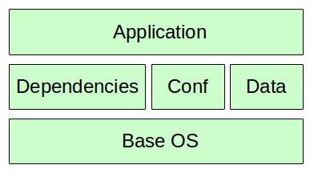

Docker, developers take power
Manuel Vacelet @vaceletm
Bio
- @EnaleanTeam CTO
- #developer
- #agile
- #SoftwareEngineering
What is this all about ? - The fame
- Started in January 2013 (22 months ago)
- Open source / 650 contributors
- 45K docker repositories on public hub
- Involved: Redhat, Microsoft, Google, VMWare...
What is this all about ? - The use cases
- PaaS
- Continuous delivery
- Continuous integration
What is this all about ? - The techno
Virtual Machine
 Docker
Docker
What is this all about ? - Terms
- Image
- Container
- Dockerfile
What is this all about ? - Dockerfile
FROM debian:jessie
RUN apt-get install apache wordpress
COPY . /var/www
CMD /usr/sbin/httpd -DFOREGROUND
Example: mytuleap.com
- Sprint 2014, docker v0.9
- 4 days to pack Tuleap in a container
mytuleap.com: Architecture

Problem #1: paper tigers
Developers power
Software is cheap
Why software is cheap?
- Easy to experiment, revert
- You can make mistakes

Developers power...less
Software is cheap... but deployment is hardWhy deployment is hard ?
- apt-get install redis npm rails bundle mongrel nginx
- npm install bower
- bower install angular gulp grunt
- ...
“For sure we can do it, it's software!”

Docker redefine delivery
Traditional

Docker

Microservices for the masses
Problem #2: princess effect
How developers do Ops
- Install ubuntu
- mix with debian repo
- bring PC to IT desk
What docker change


Back on mytuleap.com
How docker made this possible ?
- 4 days: low learning curve
- High density: low resources
- 30s cold run: damn fast !
mytuleap.com / architecture
Conclusion
Developers take power
- Infrastructure as code level up
- Deployment is no longer an issue
- Use the right tool for the right job
What's next / where to start ?
- docker.io
- Grenoble devops meetup: next tuesday (25th) @ Voxity